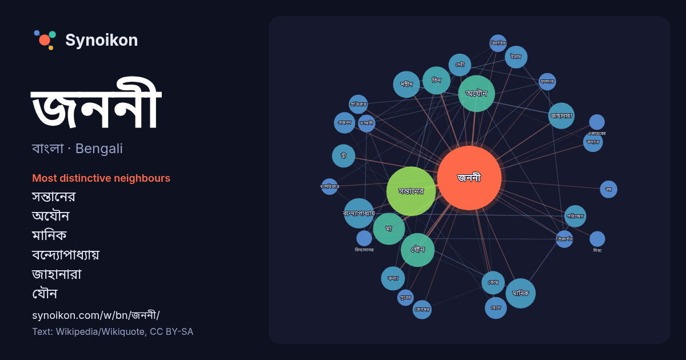

বাংলা · Bengali · word of the day list
জননী
“mother” · The words found around it in 732 instances from Bengali Wikipedia, Wikiquote.

Most distinctive neighbours
- সন্তানের 57×
- অযৌন 43×
- মানিক 28×
- বন্দ্যোপাধ্যায় 27×
- জাহানারা 23×
- যৌন 22×
- শহীদ 17×
- পরিচ্ছেদ 17×
- মা 16×
- ইমাম 14×
- কোষ 14×
- প্রজনন 13×
- কন্যার 13×
- কন্যা 11×
- দেবী 11×
- প্রিয়দর্শন 11×
- ভগবতী 11×
- হালদার 11×
- কোষের 10×
- প্রক্রিয়ায় 10×
× = how many times more often than in general Bengali Wikipedia text.
Most frequent neighbours
- সন্তানের 81
- অযৌন 45
- যৌন 38
- মা 34
- বন্দ্যোপাধ্যায় 30
- মানিক 30
- তিন 26
- শহীদ 24
- জাহানারা 23
- কন্যা 19
- কোষ 18
- স্ত্রী 18
- ইমাম 17
- দেবী 17
- ছেলে 16
- পরিচ্ছেদ 16
- পুত্র 16
- একজন 15
- প্রজনন 15
- কন্যার 13
In context
- বন্দে উৎকল জননী' ভারত এর ওড়িশা রাজ্যের জাতীয় সংগীত। এই গীত কান্ত কবি লক্ষ্মীকান্ত মহাপাত্র দ্বারা রচিত। ১৯৩৬ সালে উড়িষ্যা স্বতন্ত্ৰ হওয়ার পর এই সংগীতকে Wikipedia snippets · বন্দে উৎকল জননী
- জননী জন্মভূমিশ্চ স্বর্গাদপি গরীয়সী হলো সংস্কৃত ভাষায় একটি শ্লোকের অংশবিশেষ এবং নেপালের জাতীয় নীতিবাক্য। "মা (জননী) ও জন্মভূমি স্বর্গের চেয়েও শ্রেয়।" Wikipedia snippets · জননী জন্মভূমিশ্চ স্বর্গাদপি গরীয়সী
- শোকের জননী (লাতিনঃ বিয়াটা মারিয়া ভারগো পেরডোলেন্স ), দুঃখের মা, দু:খিত মা অথবা দুঃখ মাতা (লাতিনঃ মাতের দোলোরোসা ), এবং করুণার জননী, সপ্ত শোকের জননী বা Wikipedia snippets · শোকের জননী
- জননী ২০১৪ সালে মুক্তিপ্রাপ্ত বাংলাদেশী বাংলা ভাষার চলচ্চিত্র। ছায়াছবিটি পরিচালনা করেছেন শাহ আলম কিরণ। ছায়াছবিটি বাংলাদেশী লেখক আনিসুল হক রচিত জননী সাহসিনী Wikipedia snippets · ৭১ এর মা জননী
- জননী আইয়ার যিনি জননী নামেই বেশি পরিচিত, তিনি একজন ভারতীয় অভিনেত্রী যিনি মূলত তামিল এবং মালায়ালাম চলচ্চিত্রে অভিনয় করেন। তিনি তামিল পূর্ণদৈর্ঘ্য চলচ্চিত্র Wikipedia snippets · জননী (অভিনেত্রী)
- জননী ১৯৭৭ সালে মুক্তিপ্রাপ্ত বাংলাদেশী বাংলা ভাষার নাট্য চলচ্চিত্র। ছায়াছবিটি পরিচালনা করেছেন সিরাজুল ইসলাম ভূঁইয়া। এতে প্রধান চরিত্রে অভিনয় করেছেন Wikipedia snippets · জননী (চলচ্চিত্র)
- নারায়ণন জননী একজন ভারতীয় মহিলা ক্রিকেট আম্পায়ার। তিনি বর্তমানে আইসিসি আম্পায়ার ডেভেলপমেন্ট প্যানেল-এর সদস্যা। ২০২৩ আইসিসি মহিলা টি২০ বিশ্বকাপ প্রতিযোগিতার Wikipedia snippets · নারায়ণন জননী
- জননী জন্মভূমি (ইরেজিতে উন্ডেড লাভ হিসেবে পরিচিত) হলো অটোম্যান সাম্রাজ্যের শেষ বছর এবং তুরস্কের স্বাধীনতা যুদ্ধকে কেন্দ্র করে নির্মিত তুর্কি ধারাবাহিক নাটক। Wikipedia snippets · জননী জন্মভূমি
More Bengali words
- অরণ্য
- আয়না
- ইতিহাস
- ঈশ্বর
- কাজ
- কুকুর
- ক্ষমতা
- খাদ্য
- গান
- গ্রীষ্ম
- ঘড়ি
- ঘণ্টা
- ঘোড়া
- ছায়া
- জলবায়ু
- জীবন
- ঝড়
- টাকা
- ট্রেন
- দারুচিনি
- দ্বীপ
- নক্ষত্র
- নীরবতা
- পরিবার
- পানি
- পাহাড়
- প্রকৃতি
- বাগান
- বিজ্ঞান
- বিড়াল
- বৃষ্টি
- ভাষা
- মধু
- মরুভূমি
- মানচিত্র
- মৃত্যু
- রাস্তা
- রুটি
- লবণ
- শরৎ
- শহর
- শিল্প
- শীত
- সত্য
- সময়
- সেতু
- সোনা
- স্বাস্থ্য
- হৃদয়
Precomputed on 2026-10-09 with default settings (±5 words, medium corpus). The interactive map can refresh it with live data.